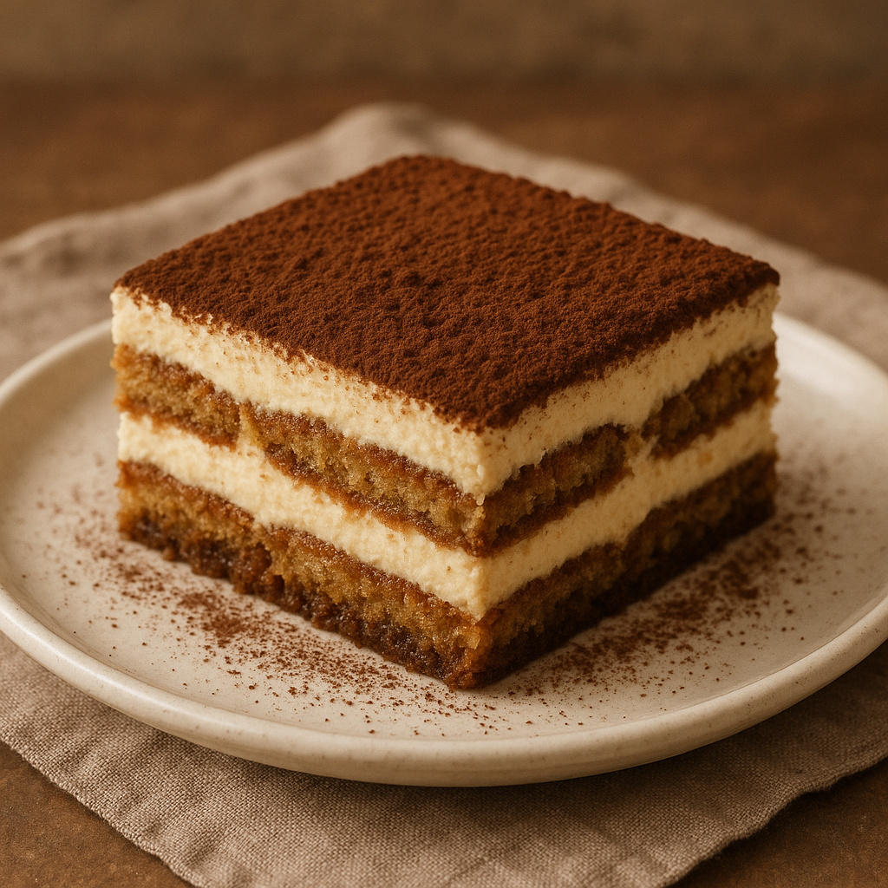

Tiramisu

Description
Tiramisu is a classic Italian dessert known for its rich, creamy texture and bold coffee flavor.
It consists of layers of coffee-soaked ladyfinger biscuits and a smooth mascarpone cheese mixture,
topped with a dusting of cocoa powder.
Ingredients
- 6 egg yolks
- 3/4 cup (150g) granulated sugar
- 1 cup (240ml) heavy cream
- 1 cup (240g) mascarpone cheese
- 2 cups (480ml) strong brewed espresso or coffee, cooled
- 1/4 cup (60ml) coffee liqueur (optional, e.g., Kahlúa)
- 1 pack of ladyfinger biscuits (about 24 pieces)
- Unsweetened cocoa powder (for dusting)
- Dark chocolate shavings (optional)
Steps
- Make the mascarpone filling:
In a heatproof bowl, whisk the egg yolks and sugar together.
Place the bowl over a pot of simmering water (double boiler)
and whisk constantly for about 8–10 minutes until thick and pale.
Let it cool slightly. Beat in mascarpone until smooth.
- Whip the cream:
In a separate bowl, beat the heavy cream to stiff peaks.
Gently fold it into the mascarpone mixture until fully combined.
s
- Prepare the coffee soak:
In a shallow bowl, combine the espresso and coffee liqueur (if using).
- Assemble the tiramisu:
Quickly dip each ladyfinger into the coffee mixture (don’t soak them too long or they’ll get soggy)
and line the bottom of a dish. Spread half the mascarpone filling over the soaked ladyfingers.
Add another layer of dipped ladyfingers and the rest of the filling.
- Chill and finish:
Cover and refrigerate for at least 6 hours (preferably overnight).
Before serving, dust with cocoa powder and top with chocolate shavings if desired.
Home